Objectives
In this lab you will create list boxes, align multiple sheet objects, move and resize objects, investigate the object properties, and creating and moving sheets.
QlikView Objects
The list box is the most basic object on the screen. It contains a list of all the values of a specific field in the database. all the values contained in the database field are shown in the list box. If there is not enough space to show all values in the visible part of the list box, a scroll bar is displayed. If a value occurs several times in the same field it is only displayed once in the list box.
Create five list boxes
Another way to check that the data has loaded properly is to strat exploring the data with the help of list boxes. Create five list boxes showing the following fields and arrange them on the Main sheet.
Right click the Main sheet, and then select Select Fields.
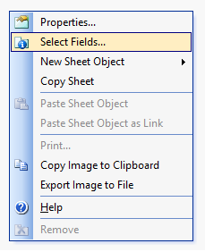
The Sheet Properties dialog opens.
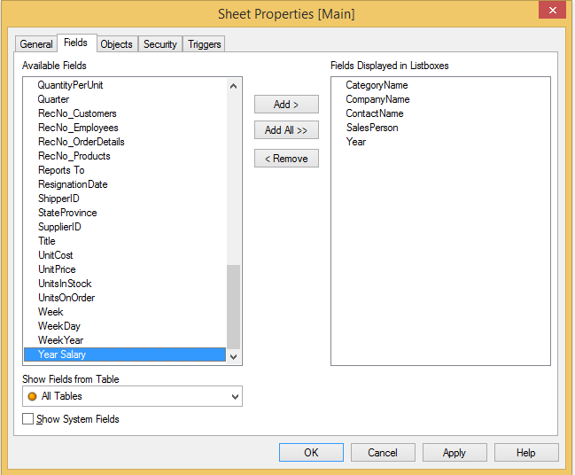
Use the fields shown in the "Fields Displayed in Listboxes" by double clicking on a field, pressing Ctrl to select more than one field or type the first letter of the field name to jump to the field.
Click Ok to close the dialog.
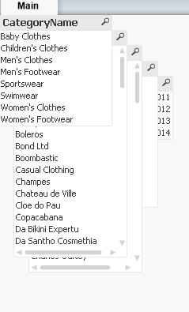
We now need to distribute and align the list boxes. Instead of moving them manually, we will use the Align/Distribute, and then Adjust Left.
In the Edit menu, select Activate All or press Ctrl+A
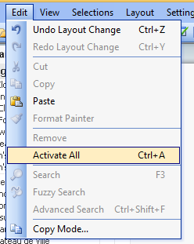
In the Layout menu, select Align/Distribute, and then Adjust Left.
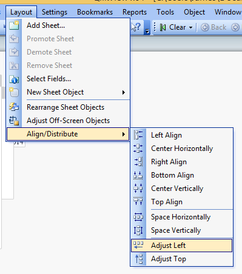
In the Layout menu, select Align/Distribute, and then Top Align.

Again ensure the list boxes are selected, you can do this by drawing a box around them all. Press the Alt key and drag the list boxes with your mouse to the desired position. Or you can press the Ctrl+Shift+Arrow keys to move the select objects with 10 pixels accuracy. (Ctrl+Arrow moves 1px)
You can size list boxes and other sheet objects by dragging the border of the object. Move the pointer to one of the corners of the list box until the appearance of the pointer changes. Press and hold the mouse button and drag the list box corner to create the desired size.
Altough the application is still very limited, it already allows you to answer some business questions:
- Who is the contact person for the componay Casual Clothing?
- Who is the Sales Person who sold to the company Casual Clothing?
- In which years did the company Das Alpen Shoe place orders?
- Which customers have never purchased a product from the category Men's Footwear?
Object properties
There are many objects you can create. No matter what the object is the workflow of creating it is the same. The more complex objects have more properties to define.
Right click the SalesPerson list box you created and select Properties. The list box properties dialog displays.
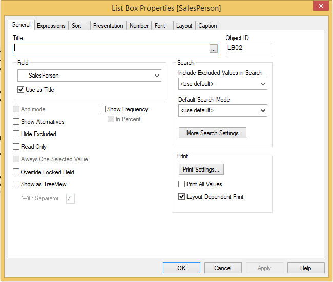
General tab
Here you can select the general properties such as title and search preferences.
Expressions
Here, you define expressions to be displayed in the list box. Each expression is placed in a new column in the list box. The upper-left corner o fhte dialog contains a list of the expressions. The following shows an example of the CompanyName list box with an expression that calculates the Sales amount.
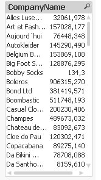
Sort
Here, you set the sort order of the values in the sheet object.
Right click the SalesPerson list box, and select properties. On the sort tab, select Text and A->Z. Clear the remaining sort definitions. Click OK. Select Autokleider in the CompanyName list box.
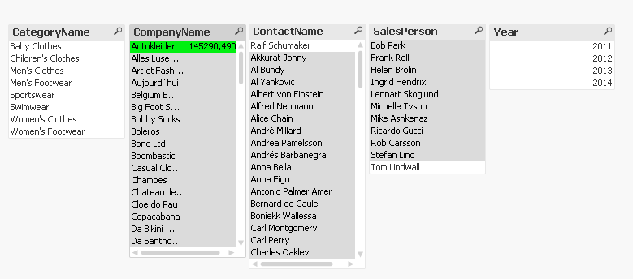
Right click the SalesPerson list box and choose Properties. On the sort tab, select State Ascending. Clear the remaining sort definitions. Click OK.
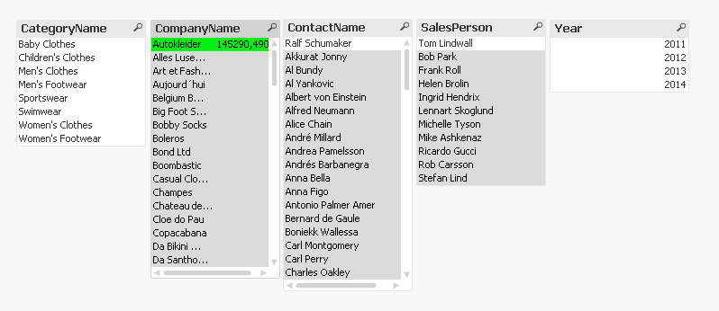
The Auto Ascending setting sorts the list box according to State only if the list box contains a vertical scroll bar. However if you enlarge the list box to show all values, the sort order of State will completly switch off.
Presentation
Here you can adjust the look and style of the list box.
Number
Each field has a default number format. Here, you can choose to override the Document Settings.
Font
Here, you can set the style and size of the font. You can set the font for any single object at Object Properties: Font, or all objects in a document at Document Properties: Font.
Layout
Here you define the layout setting for the current object.
Caption
A caption setting applies to the current object only if it is made from the Ojbect Properties tab.
Sheets, filters and navigation
Sheet and sheet objects
A QlikView document can have one or several sheets on which the sheet objects are placed. Each sheet can contain many sheet objects. If two fields are logically connected, it does not matter if they are put on the same sheet or on different sheets. Each sheet has a tab attached to it, containing hte name of hte sheet. By clicking on the tab you activate the sheet attached to it.
Sheet Properties
You set the sheet properties in the Sheet Properties dialog, which you can open by choosing Properties from the Object menu, by choosing Sheet properties from the Settings menu, or by clicking the Sheet Prperties button on the design toolbar. By default, a new sheet inherits the default backgorund that is set in the documnet properties. If you want to change it you can set a special background colour or image in the Background group on the General tab in properties.
General Tab
Control settings such as Title, Background colour, and Background image for the sheet.
Fields Tab
You decide what fields to display as list boxes on the sheet.
Objects Tab
Contains a list of all sheet objects on the current sheet.
Security Tab
This tab is useful for documents with access restriction. By deselecting an option in the list, the ADMIN user inactivates that particular command or function, thus preventing undesired changes.
Triggers
You can specify actions, including macros, to invoked on sheet and sheet object events.
Sheet Objects
Sheet objects include all the various types of objects available to you as a QlikView designer. Most of these objects will covered in these labs. The following shows the New Sheet Ojbect menu (activate when you right click on a sheet):
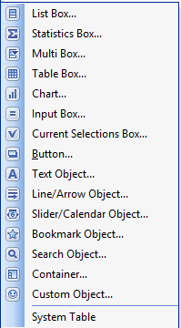
Design Toolbar
The QlikView design toolbar contains useful buttons for tasks you perform when creating or changeing the layout of a document. By default, this toolbar is not displayed. To toggle the design toolbar on or off, select View->Toolbars->Design.
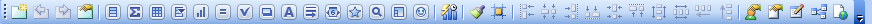
Creating, Moving Sheets, List boxes and Calendar
- From the layout menu, select Add Sheet, or click the 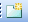 Add Sheet button on the design toolbar.
- Right click the sheet, and then select Properties.
- In the Tilte field under the General tab, type Customer Details.
- Click OK.
Repeat the above steps and create five sheets with the following names:
- Dashboard
- Product Details
- Order Details
- Sales Person Details
- Intro
Now remove the Main sheet you worked on earlier, click the Main tab and right click the sheet, then select Remove.
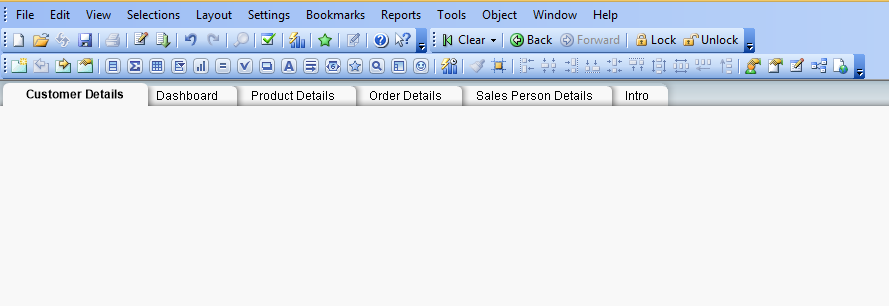
You can also rearrange the order of sheets. - Right click the tab, and then choose Promote Sheet or Demote Sheet or use the buttons on the Design toolbar 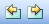 until they display in the following order:
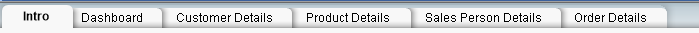
Changing the background on the Dashboard and Intro sheet
- Download and unzip the following, save all images to the same folder as your QlikView application images
- Click the Dashboard tab.
- Right click the sheet, and then select Properties. The Sheet properties opens.
- On the General tab, select Sheet Settings in the Background area.
- Select Image and then click Change.
- Locate the image you just saved.
- Under image formatting, select No stretch.
- Under Horizontal, select Left and under Vertical, select Top.
- click OK
Do the same steps for the Intro tab, use the intro_sheet_background.jpg image.
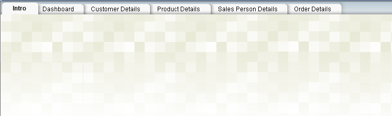
Filters
You will now design the overall frameowrk of the application, including the navigation menu that allows the user to filter the data and navigate through the applicaiton and selections. You will learn how to : - Create and align list boxes - Design list boxes that are optoimised for displaying a claendar - Create linked objects - Combine several fields in a multi box - Configure a search box - Configure Current Selection
To design a consistent navigation that allows users to filter and move through the data we should ensure the application is optimised for a particular screen resolution. Recommended is 1024 * 768. There may be monitors with higher resolution, this is a design decision based on the user profile. You can place objects manually, use the Ctrl+Arrow or Ctrl+Shift+Arrow to move in 1 or 10 pixel distances, or you can set the X and Y positions along with width and height in the Captioin properties tab.
- In the View menu, select Resize Window, and then 1024*768
- Right click the Customer Details sheet, and then select Select Fields. The Sheet properties dialog opens.
- Select the CompanyName, Country, ProductName, and SalesPerson fields and click Add.
- Click OK
- Align the boxes and place them below the grey navigation area down the left side as shown below:
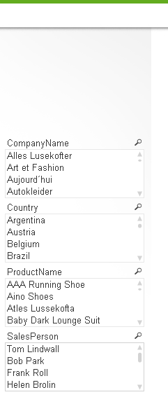
Remember you can use the Active All in the View menu and then the Align/Distribute in the Layout menu. You can also individually position each list box by chaning the X and Y coordinates in the properties dialog. Try setting the size of each list box to width 200 and height 88. Their X coordinate would each be 10 and then figure out what their Y coordinate will be.
We can now change the list box titles so they are meaningful and comprehensive.
- Right click on CompanyName list box and choose properties.
- On the General Tab type Customer for the title.
- Repeat for the other list boxes renaming ProductName to Product, and SalesPerson to Sales Person.
Next you need to show date fields, such as year, quater, and month. This is in order to provide a time dimension with which the user can slice, dice and drill into the data. A list box can also have a horizontal orientation, this is appropriate for the calendar.
- Create a new list box on the current sheet.
- In the general tab, under field, select Year.
- In the presentation tab, clear single column, under alignment, select Centre for Numbers.
- In the Layout tab, set border width to 0 pt.
- In the Caption tab, clear Show Caption.
- click OK.
- Resize the list box until it shows one single row.
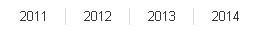
To make a copy of an existing sheet object you can press Ctrl+Alt and left click the mouse on the sheet object, drag it to a blank space and release. A copy of the object is created. Do this to the Year list box you just created.
- Right click on the new object and change the Field to be Quarter.
- Ensure the presentation stays as single column, with centre alignment.
- Do this again to create a Month list box.
- Arrange the boxes as below:
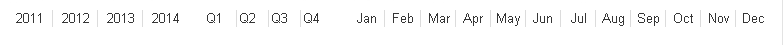
Make sure they are spaced apart evenly and aligned correctly.
Design Grid, Navigation Box, Navigation Buttons, Search Object
Objects with no borders like our time dimensions can be problematic to move or resize. You can define a Design Grid in User Preferences. When you select an object with the design grid activated you can see the actual boundaries of the object.
- In the View menu, select Design Grid, or click the button on the toolbar.
- In the settings menu, select User Preferences, on the design tab under design grid settings, set snap step to 3, and line distance to 2. 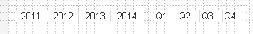
Navigation box
To ensure the user always gets feedback on the current selections on all sheets throughout the whole application by providing navigation tools to browse and clear selections.
- From the layout menu select New Sheet Object and then Current Selections Box. Click Ok.
- Place the box above the other list boxes in the left.
- Define the exact position and size to be X=10 Y=50 Width=200 and Height=110
- Next we want to change the columns in the navigation box, we want to chance the width of the Values column.
- Right click the box and choose properties.
- On the General tab enusre that Use Column Labels is selected. click Ok
- The two columns are wider than the width of the box so it has a horizontal scroll bar. Scroll to the furthest right hand side, position your mouse just beside the right edge of the box at the level of label Values. The cursor should change to a double sided arrow (like when you change the width of a column in excel). Move the width to the left so that the scrollbar dissapears.
- Go back into properties and switch off Use Colum Labels
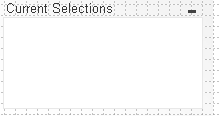
Navigation Buttons
Now we also want navigation buttons underneath the current selection box.
Back Button
- Create a new sheet object of type Button
- Set the backgroun image in the general tab, select single image and choose the back_icon button you have saved.
- In the Actions tab click Add and under Action type choose Selection, and under Action, select Back. Click Ok twice.
Repeat these steps to create a forward and clear selections buttons.
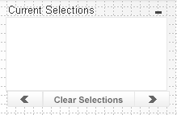
Search object
To provide search functionality anywhere in the application we want search objects for our fields.
- Create a new sheet object of type Search Object.
- In the general tab, under Search In, select Selected Fields, select the following fields:
- CategoryName
- CompanyName
- ContactName
- DivisionsName
- ProductName
- SalesPerson
- In the Presentation tab, under Visual Style/Appearance, choose Squared. Click OK.
- Place the search box as shown below:

Objects on multiple sheets
If you want the navigation objects you just created to appear on multiple sheets and to have the same layout properties, size and position we must link the objects. Linked objects are ones that share all properties and display state. When you change the properties of one, you can chose to apply the change in the other linked objects. Linked objects can be on the same sheet or different sheets.
- Prior to duplicating the objects you must lock the position and size of the objects in order to prevent the user from accidently moving them.
- Select All List boxes (Ctrl+A)
- In the Layout properties for the list boxes clear Allow Move/Size in the Options section. Cick OK.
- While they are still all selected click Copy (Ctrl+C)
- In the Dashboard sheet right click and choose Paste Sheet Object as Link
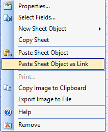
- Repeat this for the Product Details, SalesPerson Details and the Order Details sheets.
Sometimes you may wish to resize an object after you have pasted them.
- Go to the Customer Details Sheet, right click on the search box and choose properties, in the layout tab under options select Allow Move/Size. Click Ok.
- Resize the search box.
- Right click on the search box again and select Linked Objects, Adjust Position of Linked Objects. Then go back into properties to switch off the Allow Move/Size option.
Deleting objects
- On the Dashboard sheet, select Customer, Country, Product and Sales Person list boxes.
- Right click on one of the boxes, and select Remove. You will be presented with a warning message. Click Delete Selected.
Multi boxes
List boxes are versatile boxes that allow the user to make selections and give immediate feedback on how the data is connected. However a drawback is that they require a lot of screen space. Too many may limit your space for charts and tables. The multi box is a sheet object that shows several field simultaneously in a very compact way.
- On the Sales Person Details sheet right click the Sales Person list box and select Remove, deleted selected.
- Create a new sheet object type Multi Box.
- In the general tab under Available fields select SalesPerson, ReportsTo, and OfficeCity fields. Click Add.
- Choose the SalesPerson field in the right hand list and below set the label to be Sales Person, do the same for OfficeCity. click OK.
- Place the multi box below the product list box, make sure it is aligned.
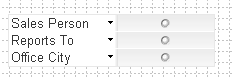
Explore the multi box behaviour. - Select Lennart Skoglund in the Sales Person Field. It shows that Lennart works in the Nice office and reports to Helena DuFrojd. - Now you want to see who else reports to Helena. - Select Helena in the Reports To field, Click Lennart to remove the selection in Sales Person. - Clearly there is a drawback to multi boxes, however they do offer an alternative to list boxes.